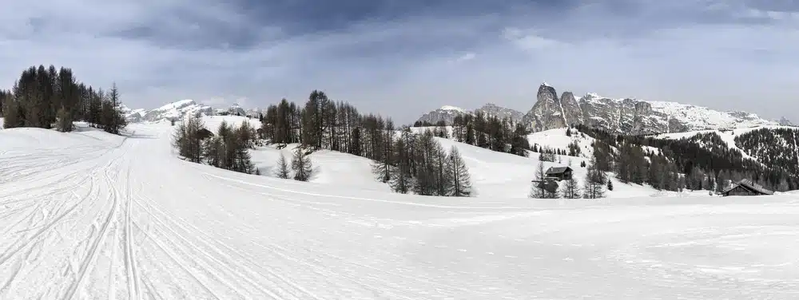

Settimana bianca in Alta Badia
ma non solo

Alta Badia meta ideale per una settimana bianca, ma non solo: continua a leggere e te ne accorgerai. L’Alta Badia si trova in Trentino Alto Adige nel cuore delle Dolomiti ed è un vero e proprio mondo da fiaba tra spazi pieni di pace e silenzio dove è facile ritemprarsi e rilassarsi e in modo particolare in inverno dove la neve ricopre tutto quanto come una stupenda e meravigliosa coltre bianca. Quello che a me personalmente è piaciuto davvero molto dell’Alta Badia sono le località davvero pittoresche che si mischiano alla perfezione con la natura e alle tradizioni locali che si sono mantenute nel tempo e il tutto è condito alla perfezione anche dall’uso del ladino che risuona ancora nella vallata.
Valle di Cornara
La mia settimana bianca in Alta Badia, Patrimonio Unesco, inizia dalla valle di Cornara, Colfosco, Badia, San Cassiano, La Vila e La Val che può vantare il quarto posto tra le destinazioni italiane che si possono fregiare della Certificazione GSTC (Global Sustainable Tourism Council) ottenuta nell’estate del 2022. Ma in cosa consiste il Global Sustainable Tourism Council? Il Global Sustainable Tourism Council è l’unico standard a livello internazionale che è riconosciuto per il turismo responsabile. Ma cosa vuol dire all’atto pratico? Vuol dire che qui ci sono degli impianti di risalita che vengono alimentati da energia che è rinnovabile, ma anche da sistemi di innevamento artificiale che sono altamente innovativi nel senso che hanno un basso impatto di inquinamento sull’ambiente così come la maggior parte delle strutture alberghiere.
Tra discese meravigliose e buon cibo
Se dici inverno e ci abbini la neve allora l’Alta Badia è la meta perfetta per te. In Alta Badia fino al prossimo 7 aprile ci sono la bellezza di oltre 120 chilometri di piste di diverse difficoltà che vanno da un’altezza dei 1.300 ai 2.778 metri sul livello del mare.Una delle piste migliori, secondo me, è la Gran Risa che si snoda tra il bosco proprio a ridosso di La Villa dove ogni anno si svolgono le gare di Coppa del Mondo. E ancora i 500 chilometri di piste collegate che si possono fare, ovviamente, con gli sci indossati intorno al massiccio del Sella.
